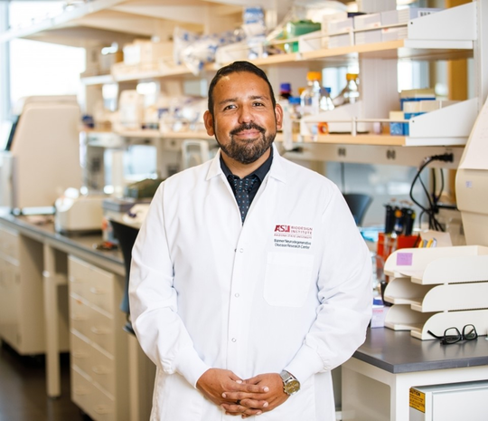

Ramon Velazquez
Assistant Professor, School of Life Sciences and the ASU-Banner Neurodegenerative Disease Research Center
Click to view Ramon Velazquez’s Curriculum Vitae
Biography
Dr. Ramon Velazquez is an Assistant Professor at the School of Life Sciences and a researcher at the Neurodegenerative Disease Research Center at the Biodesign Institute - Arizona State University (ASU). Dr. Velazquez's research interests include identifying novel therapeutic targets for neurodegenerative disorders such as Alzheimer’s disease (AD) and Down Syndrome (DS). In particular, he focuses on early molecular events that are triggered by environmental factors that induce the progression of the disease. Dr. Velazquez is also interested in drug discovery and dietary supplementation of B-like vitamins as a method to prevent disease progression. Dr. Velazquez received his doctoral degree at Cornell University in 2014, where he was funded by the National Science Foundation (NSF) Pre-Doctoral fellowship and completed his postdoctoral training in molecular biology and neuroscience at ASU, where he was independently funded by the Alzheimer’s Association. Additionally, he was funded through an NSF postdoctoral fellowship. Dr. Velazquez’s ultimate goal is to advance science while consecutively helping those who suffer from insidious neurodegenerative diseases.
Teaching and mentorship are particularly important to Dr. Velazquez in order to reach his ultimate goal of progressing science and having a large impact on the community. Dr. Velazquez has over 13 years of teaching experience, including serving as a teaching assistant while he was an undergraduate at California State University Long Beach and also developed and taught courses on mental illness and neurodegeneration as a graduate student at Cornell university. Currently, at ASU, Dr. Velazquez serves as a guest lecture for Neurobiology and Memory courses every semester. Dr. Velazquez's philosophy when teaching is not to simply reiterate information from a textbook, but to get students excited about the topics at hand by providing real world examples that students can relate to and radiating excitement during lectures.